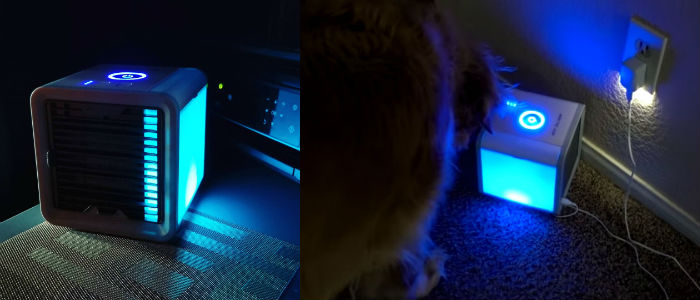
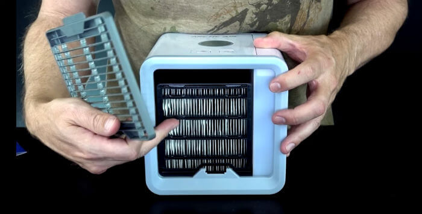

Warum Optiker Brillentücher, Reinigungstücher und Sprays gegen DAS HIER eintauschen
Freitag, 4. Jan, 2019 | Advertorial für Peeps
Quäle Dich nicht durch einen weiteren langen, unkomfortablen Sommer, nimm stattdessen das hier mit…
Sei bereit! Dieser Sommer in Deutschland wird HEISS…
Herkömmliche Klimaanlagen sind überholt. Sie sind teuer in der Installation und noch teurer im Betrieb. Sie sehen hässlich aus und sind schwierig und nicht ungefährlich zu reinigen. Und Du kannst sie noch nicht mal im Haus bewegen oder mit nach draußen nehmen!
Lüfter sind billiger, aber sie pusten nur die Luft herum – und wenn die Luft schon zu heiß ist? Dann lässt Dich das noch mehr schwitzen, wenn die heiße Luft im heißen Zimmer herumwirbelt! Und sie sind SEHR geräuschvoll.
Für einige wird das Sommerwetter schon zu viel. In der Hochsommerhitze macht es echt keinen Spaß mehr, sich in der Hitze zu quälen. Es ist auch sehr schwierig, nachts in feuchter, stickiger Luft zu schlafen.
Tausende Menschen im Land benutzen jetzt eine billigere Alternative, um sich in der Hitze zu kühlen und ihre Luft zu reinigen.
Jetzt möchte JEDER im Land auch diese toll aussehende Box für den Sommer!
Worüber sprechen wir hier?
Es ist das neue CoolAir, eine innovative Alternative zur Klimaanlage und kühlt Dich ganz genauso! Es ist perfekt für die superheißen Sommertage und Nächte!

Es ist winzig, einfach zu bedienen und es kann Sie in Sekundenschnelle abkühlen!
Das CoolAir wurde von zwei deutschen Ingenieuren entwickelt, die in ihren für den Winter gemachten Häusern im Sommer nicht länger schwitzen wollten. Sie fanden, dass Klimaanlagen äußerst ineffizient und teuer sind. Die Ingenieure haben auch bemerkt, dass keine der traditionellen Klimaanlagen zum Mitnehmen geeignet ist.
Deshalb haben sie diese ultrakompakte, leichte, transportable Klimaanlagen-Box entwickelt. Sie benutzt nur einen Bruchteil der Elektrizität und ganz ohne Verzicht auf die Hauptvorteile von Spitzen-Klimaanlagen-Modellen!
Das Gerät ist winzig, einfach und kann Dich in Sekunden kühlen!
Die Leute verwenden es, um sich selbst zu kühlen und die Luft in den superheißen, feuchten Stunden zu reinigen – die Ergebnisse sind fantastisch…

Wie funktioniert das?
Wir waren überrascht, wie leicht es einzurichten geht! Zunächst schließt Du es entweder an eine Steckdose oder einen USB-Port an (es braucht nicht viel Energie und kann sogar vom Telefon- oder Laptop-Akku betrieben werden!).
Wenn Du das gemacht hast, fülle den integrierten Speicher mit 0,6 Liter normalem Leitungswasser auf.
Und dann kommt das Beste: sofortige, kalte Luft!

Die Steuerung ist einfach überragend, wirklich einfach und stilvoll. Die kalte, frische Luft vom CoolAir fühlt sich natürlich und sauber an – weil sie es ist!
Coole Tipps:
1) Um Deine Luft noch kälter zu machen, fülle eine Flasche kaltes Leitungswasser aus dem Kühlschrank ODER sogar Eis ein!
2) Für eine angenehm entspannende Atmosphäre füge dem Wasser ein paar Tropfen ätherisches Duftöl hinzu!
Wie kann ich ein CoolAir kaufen
Das ist total leicht. Du kannst es über die offizielle Webseite kaufen.
Das CoolAir ist perfekt, denn…
- der Lüfter hat drei Geschwindigkeiten
- es ist leicht zu betreiben: Energie über USB
- der Wassertank reicht bis zu acht Stunden
- sieben Stimmungslicht-Farbvarianten
- es ist kompakt – passt in verschiedene Bereiche
- es ist tragbar – kann auf Reisen mitgenommen werden
Was macht diese kleine Box so besonders?
Die Hauptvorzüge des CoolAir sind Tragbarkeit, Preis, Gesundheitsvorteile und einfache Verwendung.
Die Box ist nur etwas größer als eine Frühstücksbox. Das und die Tatsache, dass es mit einer Taschen-Solarzelle oder einem Akkupack betrieben werden kann, macht es zur wahrscheinlich ersten tragbaren Klimaanlage der Welt.
Viele sagen, dass es ihnen endlich geholfen hat, viel besser zu schlafen:
Viele Leute geben dem CoolAir online 5-Sterne-Bewertungen.
Schlecht Schlafende stellen das CoolAir bei Nacht direkt neben das Bett. Die entspannende Briese kühler, sauberer Luft, das beruhigende weiche Nachtlicht und das leise, beruhigende weiße Rauschen des Lüfters schaffen perfekte Schlafbedingungen!
CoolAir -Anwender behaupten, dass sie besser als je zuvor schlafen und voll ausgeruht und energiegeladen aufwachen!
Du kannst unter 7 weichen „Stimmungslicht“-Farbmöglichkeiten wählen, für besseres Schlafen!
Dabei haben wir noch nicht mal erwähnt, dass CoolAir auch noch Staub und schädliche Partikel aus Deiner Luft filtert. Es unterstützt die allgemeine Gesundheit, stärkt das Immunsystem und verkürzt die Genesungszeit bei Krankheiten. Es ist, als ob Du die sauberste Luft der Schweizer Berge atmest!

Wir wissen alle, dass konventionelle Klimaanlagen innen voller Staub, schädlichem Schimmel und gefährlichen Keimzellen sind. Und dann atmest Du diese giftige Mischung ein, was später große Gesundheitsprobleme bringt…
Bei Deinem CoolAir, kannst Du leicht und sicher den Filter entfernen und waschen. Ein teurer Klimaanlagenspezialist ist dafür unnötig!
CoolAir empfiehlt, den Filter alle 6 Monate zu ersetzen. Du kannst ihn online für 10 $ bestellen.
Und zu guter Letzt ist der Preis einfach toll. Die meisten Klimaanlagen kosten mindesten 200 $ UND Du musst für Installation UND die hohe Stromrechnung monatlich zahlen…. Jeder von uns hat schon genug Nebenkosten und braucht nicht noch mehr!
CoolAir kostet weniger als 90 $ (sogar bis zu 53 $ bei einem der Mehrfachkaufangebote hier). Keine Installation mit viel Schmutz, keine hohen Stromrechnungen. Für ein Kühlgerät dieser Qualität muss es wirklich das Klimagerät mit dem besten Preis-Leistungsverhältnis sein!
Fazit: Lohnt sich das?
Ein so wertiges Gerät für diesen Preis – wir sagen definitiv Ja! Es ist tragbar, leistungsstark, effizient und günstig im Betrieb. Denke nur an den tollen Schlaf und den Komfort, den Du mit Deinem CoolAir bekommen kannst!
Wie bekomme ich ein CoolAir?
- Bestelle Dein CoolAir von Bestelle Dein CoolAir von der offiziellen Webseite zum besten Preis.
- Befülle es mit normalem Leitungswasser.
- Los geht‘s, kühl Dich und Deine Freunde oder Familie und atme super saubere Luft!!
UPDATE: Als spezielles Sommerangebot bietet die Firma jetzt gerade und für begrenzte Zeit einen unglaublichen 50%-Rabatt und kostenlosen Versand an!
Hier klicken, um die Verfügbarkeit zu prüfen »